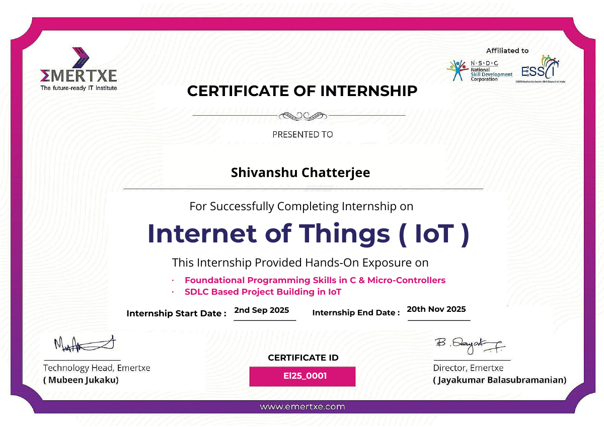
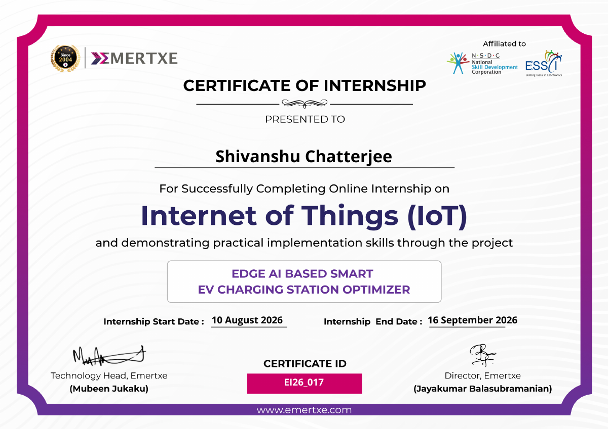

My focus
Embedded systems, IoT, and Edge AI
Hello, I’m
I’m a B.Tech ECE student at Shivalik College of Engineering, exploring practical solutions across IoT, embedded systems, computer vision, and Edge AI.
01 / About me
I enjoy practical engineering—bringing programming, sensors, and hardware together to explore real-world problems.
I’m pursuing a B.Tech in Electronics and Communication Engineering at Shivalik College of Engineering. Through academic projects and internships, I’ve gained experience contributing to IoT-based systems and leading programming work on a computer-vision-focused project.
Embedded systems, IoT, and Edge AI
Programming alongside hardware implementation
B.Tech · Electronics & Communication
Dehradun, Uttarakhand, India
02 / Selected work
A selection of collaborative work that connects sensing, hardware, programming, and intelligent systems.
IoT · Sensors · Hardware
An IoT-based hydroponic system developed with a team, combining sensor-oriented hardware work and programming.
Computer vision · Human recognition
A defence-oriented project centered on computer vision and human recognition, where I lead the programming work with the team.
03 / Project details
A closer look at the project workflow, components, and documentation—based on the report and project details provided.
IoT · Embedded systems · Smart agriculture
A sensor-enabled hydroponic setup designed around the Nutrient Film Technique (NFT). An ESP32 collects environmental and water-temperature readings, sends data to Arduino IoT Cloud over Wi-Fi, and supports remote monitoring and control of the water pump and grow lights.
Future scope in the report: adding pH and TDS sensors, plus exploring renewable-energy integration.
The linked report includes the methodology, block diagram, Embedded C code, observations, conclusion, and references.
04 / Technical toolkit
Skill areas and proficiency descriptions are based on my resume.
Intermediate level
Embedded C: intermediate level
Intermediate level
Front-end: intermediate · MATLAB & Simulink listed
05 / Experience & education
Internship experience at EMERTEX Private Ltd. across IoT fundamentals and Edge AI applications.
INTERNSHIP / 01
September 2025EMERTEX Private Ltd.
Learned about peripherals, built virtual projects around peripheral concepts, and explored implementing IoT within projects.
INTERNSHIP / 02
10 Aug – 16 Sep 2026EMERTEX Private Ltd.
Explored Edge AI and IoT implementation for a smart charging station concept for upcoming electric vehicles.
EDUCATION
Shivalik College of Engineering · Currently pursuing, 4th year / 7th semester
06 / Credentials
Verified internship certificates issued by EMERTEX Private Ltd. Open a PDF to inspect the original document.

View originalHands-on exposure to foundational programming in C and microcontrollers, plus SDLC-based IoT project building.

View originalOnline IoT internship certificate recognizing practical implementation skills through an Edge AI-based smart EV charging station optimizer project.
Certificate dates and IDs are transcribed from the uploaded PDFs.
07 / Get in touch
I’m interested in opportunities and conversations around IoT, embedded systems, computer vision, and Edge AI.